Core System
회사
1. 진입 경로
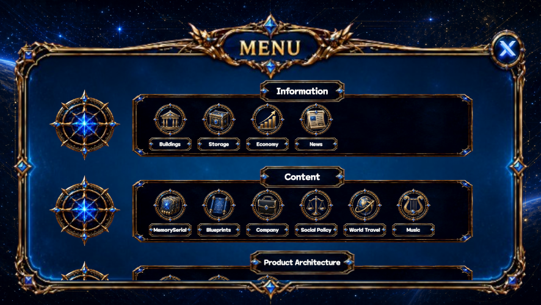
회사는 코어 시스템 메뉴에서 들어간다.
홈
→ 코어 시스템
→ 회사회사 메뉴는 회사 설립, 운영, 레시피 거래, 자회사 분할, 회사 매각을 관리하는 전체 회사 시스템의 입구다.
2. 최초 진입
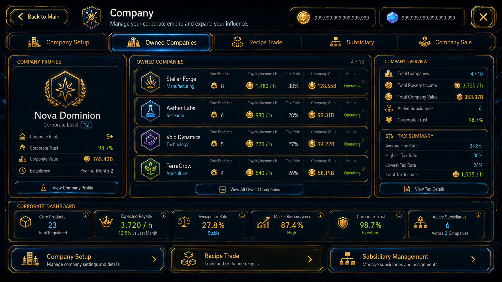
아직 설립한 회사가 없다면 회사 메뉴를 눌렀을 때 바로 회사 설립 화면으로 들어간다.
코어 시스템
→ 회사
→ 회사 설립
→ 핵심 아이템 6개 선택
→ 회사 이름 결정
→ 회사 생성회사 시스템 해금 조건
게임 시작 후 게임 시간으로 6개월이 지나야 한다.
회사를 설립할 수 있는 자금을 보유해야 한다.
두 조건을 충족하면 코어 시스템의 회사 메뉴가 해금된다.
회사 메뉴가 열린 뒤 설립 비용을 지불하면 회사를 만들 수 있다.
회사 작동원리
- 핵심 아이템 6개를 선택한다.
- 선택한 아이템은 회사의 주력 상품이 된다.
- 회사 이름을 정한다.
- 선택한 상품과 레시피를 기반으로 회사 가치와 수익 구조가 형성된다.
3. 회사 설립 이후 진입
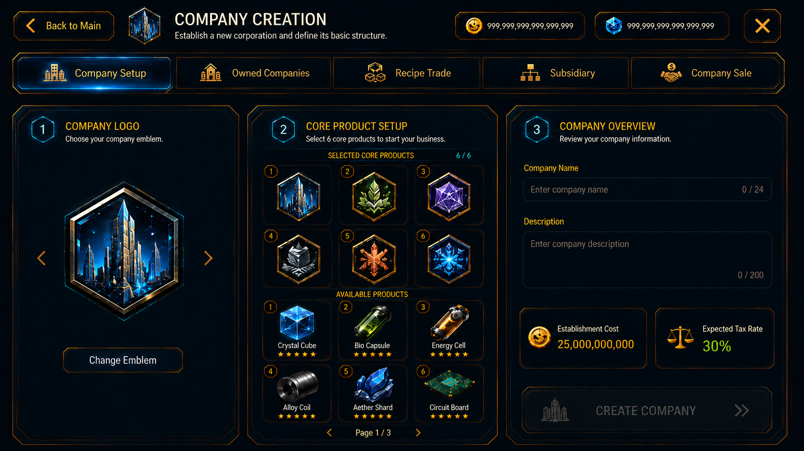
회사를 한 번이라도 설립했다면 이후에는 회사 메뉴를 눌렀을 때 보유 회사 목록으로 들어간다.
코어 시스템
→ 회사
→ 보유 회사
→ 회사 선택
→ 회사 상세보유 회사 목록에서는 본회사와 자회사를 함께 확인한다.
4. 회사 내부 메뉴
회사
├ 회사 설립
├ 보유 회사
├ 레시피 거래
├ 자회사 관리
└ 회사 매각회사 설립
새로운 회사를 만든다.
회사 하나당 핵심 아이템 6개를 선택한다.
보유 회사
현재 소유한 모든 회사를 확인한다.
회사를 선택하면 해당 회사의 상세 운영 화면으로 들어간다.
레시피 거래
보유한 레시피의 라이선스를 판매하거나 소유권을 완전히 매각한다.
자회사 관리
기존 회사의 상품과 레시피 일부를 분리해 자회사를 설립하고 관리한다.
회사 매각
보유 회사를 다른 기업이나 투자자에게 통째로 매각한다.
5. 회사 상세 화면
회사 상세
├ 주력 상품 6개
├ 보유 레시피
├ 로열티 수익
├ 세금
├ 회사 가치
├ 기업 신뢰도
├ 시장 반응성
├ 레시피 관리
├ 자회사 분할
└ 회사 매각주력 상품 6개
회사 설립 시 선택한 핵심 상품을 표시한다.
상품의 판매 실적과 시장 평가가 회사 가치에 반영된다.
보유 레시피
회사가 소유한 레시피와 현재 사용 중인 생산권을 확인한다.
로열티 수익
상품, 레시피, 브랜드, 생산권 사용으로 발생하는 반복 수익을 표시한다.
세금
회사 수익 중 국가에 납부해야 하는 금액을 표시한다.
회사 가치
상품 실적, 레시피 가치, 로열티, 신뢰도, 반응성, 성장 가능성을 종합한 회사의 평가 금액이다.
기업 신뢰도
소비자, 투자자, 거래 상대가 회사를 얼마나 안정적이고 믿을 수 있다고 보는지를 나타낸다.
시장 반응성
신제품, 가격 변경, 광고, 유행, 사회정책 변화에 시장이 얼마나 빠르고 크게 반응하는지를 나타낸다.
레시피 관리
레시피를 직접 사용할지, 라이선스로 판매할지, 완전히 매각할지 결정한다.
자회사 분할
일부 상품과 레시피를 분리해 새로운 자회사를 만든다.
회사 매각
회사를 계속 운영하지 않고 현재 가치에 따라 통째로 판매한다.
6. 핵심 아이템 6개
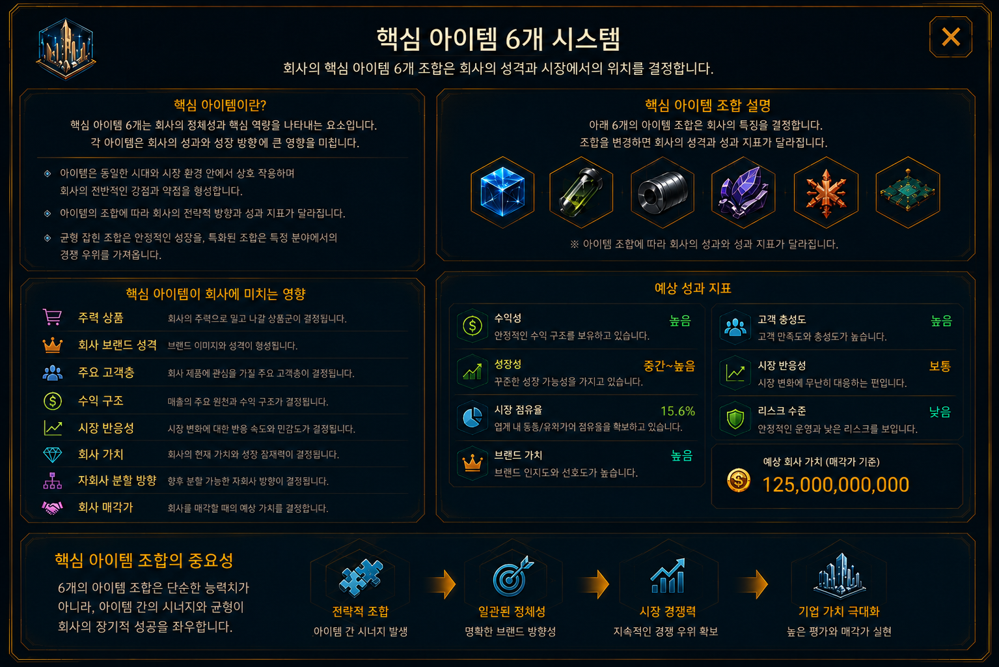
플레이어는 회사마다 핵심 아이템 6개를 선택한다.
선택한 아이템은 다음 요소에 영향을 준다.
아이템 6개 조합에 따라 회사마다 다른 성격과 시장 위치를 가지게 된다.
7. 로열티
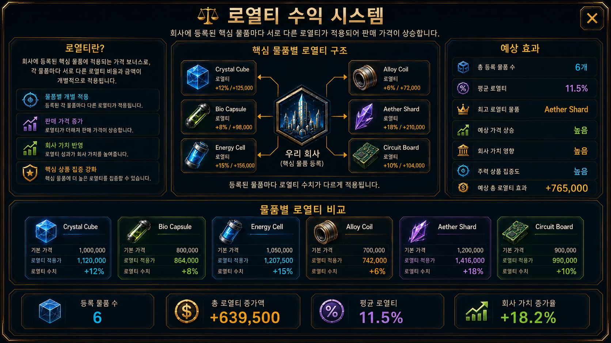
회사는 상품과 레시피를 통해 지속적인 로열티 수익을 얻는다.
로열티 발생 대상
로열티는 회사를 계속 보유할 이유가 되는 반복 수익이다.
8. 세금과 수익 배분
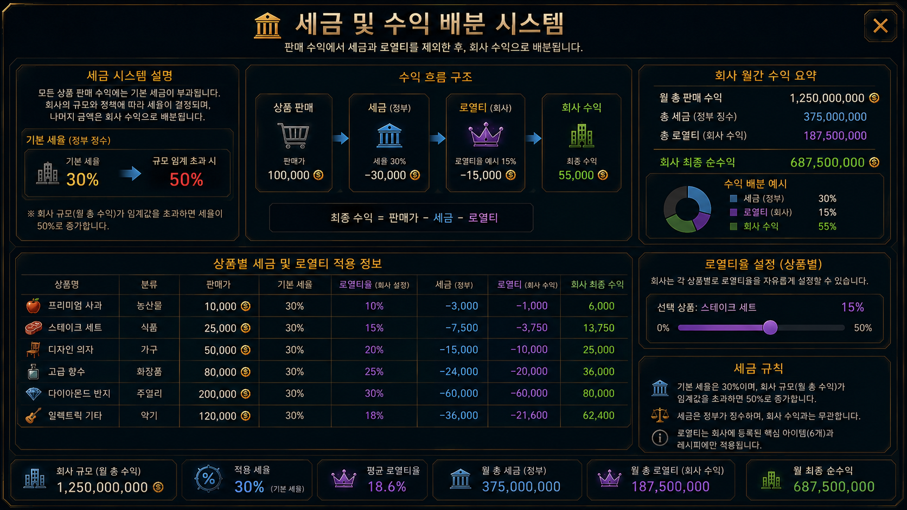
회사는 발생한 수익 중 일부를 국가에 세금으로 납부한다.
세율과 회사 수익 배분율은 서로 다른 값으로 계산한다.
총수익
→ 세금 차감
→ 회사 수익 배분
→ 플레이어 실수익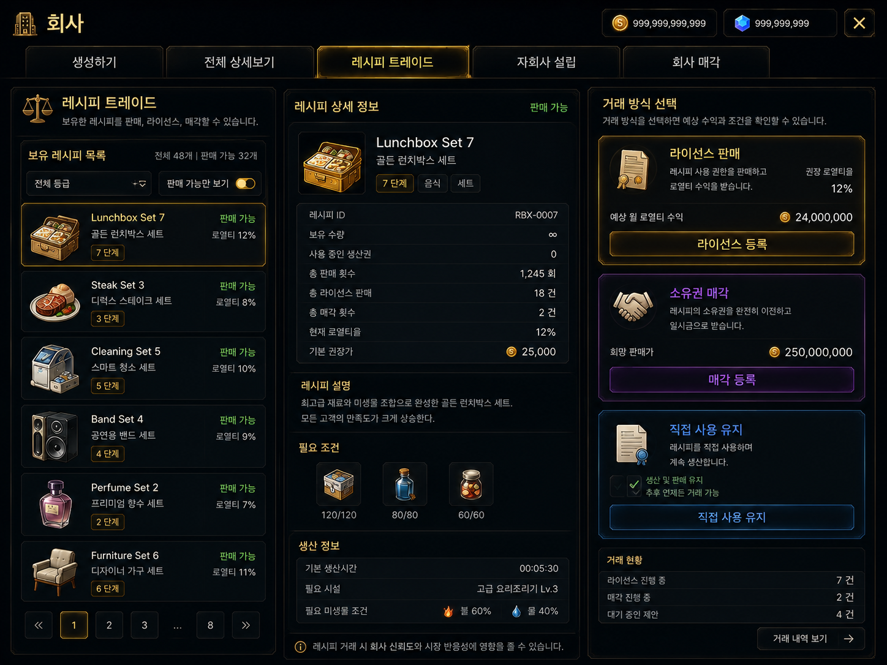
레시피는 회사의 생산 수단이면서 거래 가능한 자산이다.
레시피 라이선스
레시피 매각
10. 자회사 설립과 사업 분할
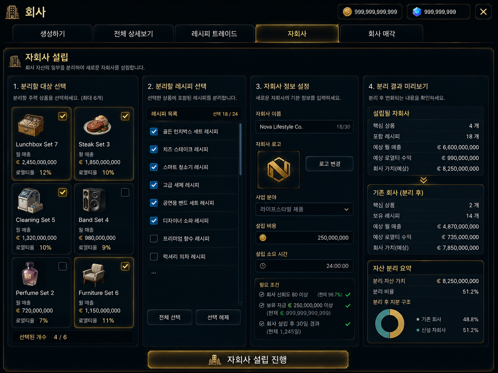
회사가 일정 규모 이상 성장하면 일부 사업을 분리해 자회사를 설립할 수 있다.
분할 대상
분할 효과
본회사
→ 상품과 레시피 일부 분리
→ 자회사 설립
→ 자회사 독립 성장
→ 유지 또는 매각11. 회사 매각
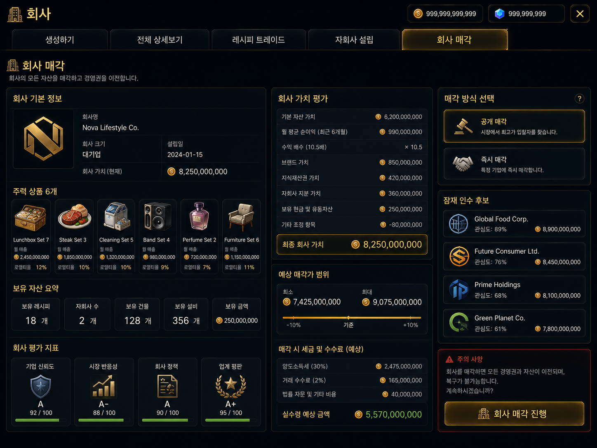
플레이어는 성장시킨 회사를 통째로 매각할 수 있다.
회사 매각가에 반영되는 요소
플레이어는 회사를 계속 운영해 반복 수익을 받을지, 가치가 높을 때 일시금으로 매각할지 결정한다.
12. 경영 원칙
회사 운영에는 다음 분야의 원칙이 적용된다.
플레이어가 경영 원칙과 시장 기준을 지키면 기업 신뢰도와 시장 반응성이 상승한다.
반대로 무리한 사업 분할, 품질 저하, 불공정 거래, 계약 위반 등이 발생하면 신뢰도와 반응성이 하락할 수 있다.
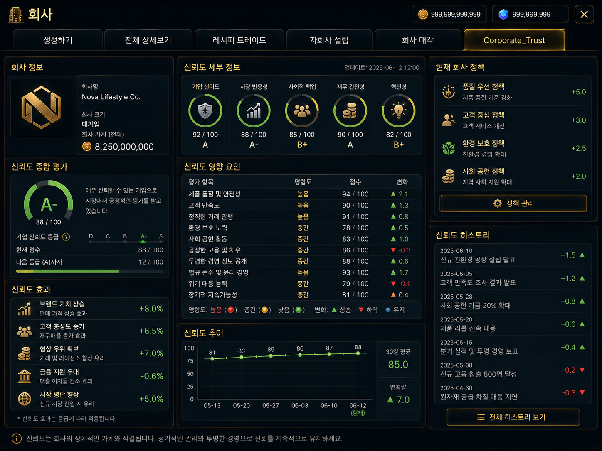
기업 신뢰도는 소비자, 투자자, 거래 상대가 회사를 얼마나 믿는지를 나타낸다.
신뢰도 상승 효과
신뢰도 하락 원인
14. 시장 반응성
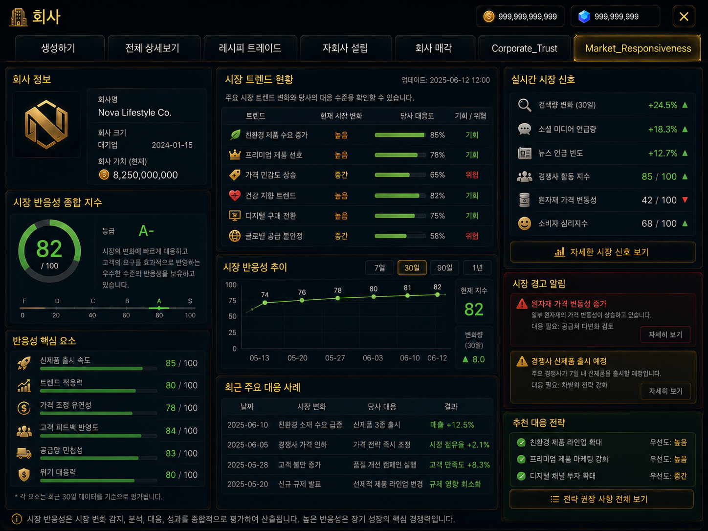
시장 반응성은 회사의 행동에 소비자와 시장이 얼마나 빠르고 크게 반응하는지를 나타낸다.
반응성 상승 효과
시장 반응성은 판매량 자체가 아니라 시장 변화가 적용되는 속도와 강도를 나타내는 지표다.
15. 전체 진행 흐름
코어 시스템
→ 회사
→ 핵심 아이템 6개 선택
→ 회사 설립
→ 상품 판매
→ 로열티 수익 발생
→ 세금 납부
→ 회사 가치 상승
→ 레시피 라이선스 또는 매각
→ 자회사 설립과 사업 분할
→ 회사별 성장
→ 자회사 또는 전체 회사 매각메뉴 설명
회사
핵심 아이템 6개를 선택해 회사를 설립합니다. 상품과 레시피에서 로열티를 얻고, 레시피 라이선스 판매, 자회사 분할, 회사 매각을 통해 수익 구조를 확장할 수 있습니다. 경영 원칙과 시장 기준을 지키면 기업 신뢰도와 시장 반응성이 상승합니다.